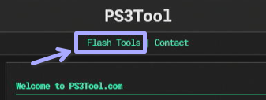
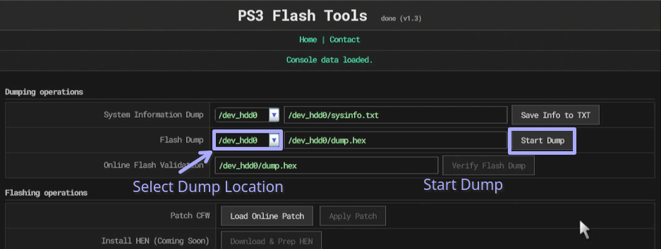
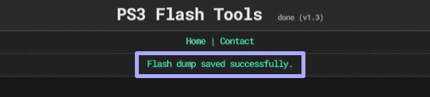
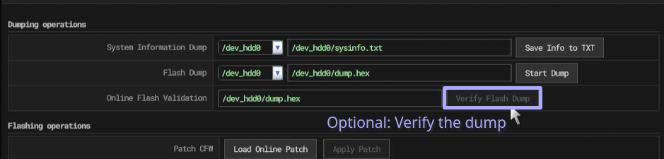
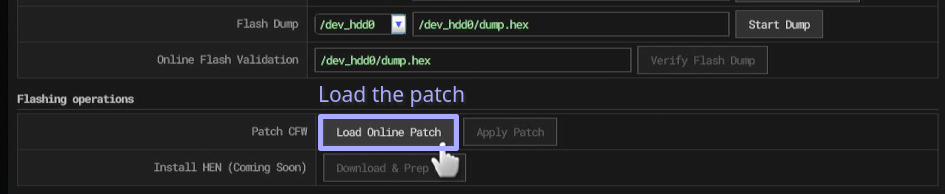
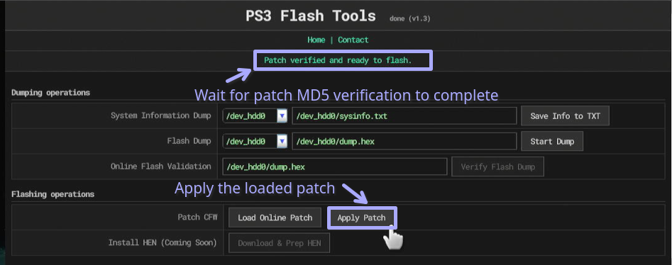
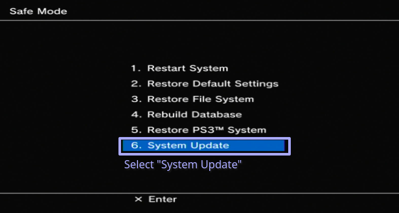
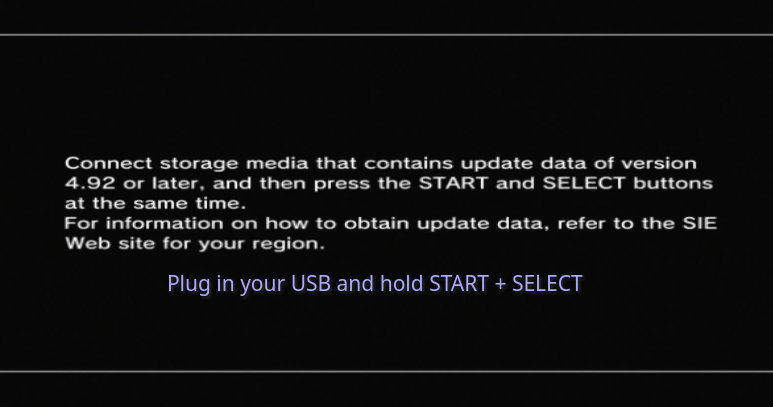

Tutorial: Installing CFW with our PS3 Flash Tools app on firmware 4.93 and below
Requirements
In order to instal CFW on your PS3, you have to verify if your PS3 supports the traditional way of installing CFW.
If you are using a later model Slim model (CECH-25xx after 1A datecode and CECH-30xx) or a SuperSlim model (NOR version only), you have to use qCFW.
Supported models include:
- CECHA/B/C/E/G/H/J/K/L/M/P/Q Fat Consoles
- CECH-20xx/21xx and some CECH-25xx Slim models
You can check the model of your PS3 by looking at the sticker on the bottom of the console or the sticker on the rear side next to the ports.
Step 1: Loading the Flash Tools app
To load the Flash Tools app, simply press the "Flash Tools" link at the top of this page!

Accept any questions that it may ask for.
Once the app is loaded, it will show a different user interface and display your console data.
Step 2: Create a backup dump of your flash memory
To make sure you can recover your system in the case of a brick event, we highly recommend creating a flash backup on your USB flash device.
To create a flash backup, simply select the file destination location. Plug your USB flash drive into the right-most USB port and select "dev_usb000", if you use the left-most USB port, select "dev_usb006"!
Once you have specified the dump destination location, press on the "Start Dump" button. The top status bar will update as the dump progresses, for NOR systems it will be very fast however, on NAND systems it might take a while.

Wait for the top status bar to show "Flash dump saved successfully"

If the dump save fails, try to change the destination.
Step 3: (Highly recommended) Verify the dumped flash backup
You can verify your dump using two methods, one is the "Online Flash Verification" option in the app, and the other is manually verifying it yourself with a tool like PS3PyChecker on a separate computer.

We recommend doing the latter option for your own peace of mind and because it is a lot faster.
Online Flash Verification only works with dumps located on "dev_hdd0"!
Step 4: Loading and applying the flash patch
Warning: This is the part where the flash patch is applied, we have to remind you that if anything bad happens here, we bear no responsibility for it. Back. Your. Flash. Up!
To load the patch into memory, press the "Load Online Patch" option.

Once the status bar at the top of the screen says "Patch verified and ready to flash", you can proceed to applying the loaded patch!

Once you press "Apply Patch", do not the controller, leave it alone to apply the patch.
On NAND systems, the process will be near instant (10-15 seconds), on NOR systems it will take a little bit longer.
Wait for the message that says you can restart the console safely, once it shows up, get your CFW update USB ready!
Step 5: Updating the PS3 to CFW
Once the flash patching is completed, turn the system off.
Flashing the CFW update should always be done in safe mode!!!
Once the console is off, press and HOLD the power button. You will hear the initial beep, then after a couple of seconds a second beep after which the console will power off. Release the power button now.
Press and HOLD the power button again, you will hear the initial beep, then a second beep and after a few more seconds you will hear two beeps. You can now release the power button.
Plug in your DualShock3 or SixAxis joystick in with a USB cable and press the PS button.
Select option "6. System Update" and follow the instructions on the screen.


After this, your PS3 will update with CFW! Enjoy :D